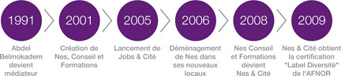

Avec plus de dix ans d'expérience sur le terrain, à Vaulx-en-Velin et dans de nombreux quartiers en déficit de dynamique collective, Abdel Belmokadem a développé et mis en application des techniques de médiation et de gestion de conflits innovantes. Ces dispositifs ont fait leurs preuves dans des zones particulièrement sensibles.
Mais le champ de la médiation doit aussi dépasser la vie des « quartiers » pour agir sur le fonctionnement et les pratiques des acteurs publics et économiques. La méconnaissance et la peur de l’autre, le désœuvrement social des usagers et/ou clients, sont des facteurs permanents de rupture de dialogue entre ces acteurs.
Améliorer la compréhension de cet environnement est un facteur déterminant de réussite des initiatives mises en œuvre dans ces quartiers.
Les outils proposés par Nes et Cité aident acteurs institutionnels, acteurs économiques et services publics à rétablir cet indispensable dialogue et à bénéficier d’une meilleure approche de l’environnement «quartier».
Pourquoi le nom Nes et Cité ? : Abdel Belmokadem a choisi « Nes » pour trois raisons :
Quant à Cité, c'est un rappel à ses origines, notamment les quartiers populaires dans lesquels il est né et a grandi.
